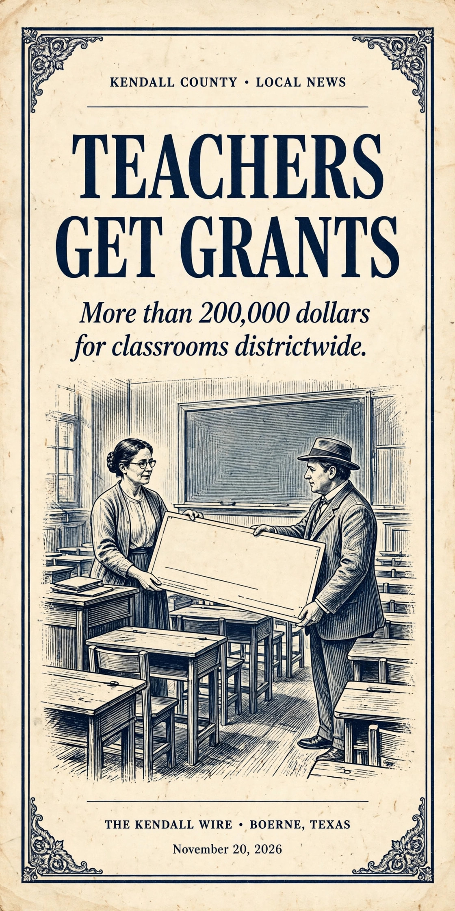

Schools | November 20, 2026
Boerne ISD teachers received more than $200,000 in Teacher Innovation Grants when the Boerne Education Foundation Prize Parade visited classrooms across the district, the district announced November 19. The grants reached teachers at every campus.
Sports | November 20, 2026
Boerne Champion beat McAllen High 72-14 and Boerne High beat Mercedes 41-7 on Thursday night, November 19, in Laredo in the area round of the UIL playoffs.
Community | November 19, 2026
Operation Christmas Child National Collection Week runs November 16 to 23, 2026.
Courts | November 19, 2026
A Kendall County jury convicted Allen Remard Graham Jr., 28, of San Antonio, of intoxication manslaughter, manslaughter, and intoxication assault in the February 16, 2025 head-on crash on Interstate 10 near Comfort that killed Manuela Rodriguez.
Schools | November 18, 2026
Boerne ISD trustees reviewed a Campus Boundary Committee recommendation on November 16 to move the Esperanza neighborhood from Boerne Middle School North to Voss Middle School and place the full Fabra Elementary zone in the North zone for 2027-28, with a decision scheduled December 14.
Civic | November 17, 2026
The City of Boerne hosts a come-and-go public meeting on Phase 2 of the Adler Road reconstruction on Wednesday, November 18, from 5 to 7 p.m.